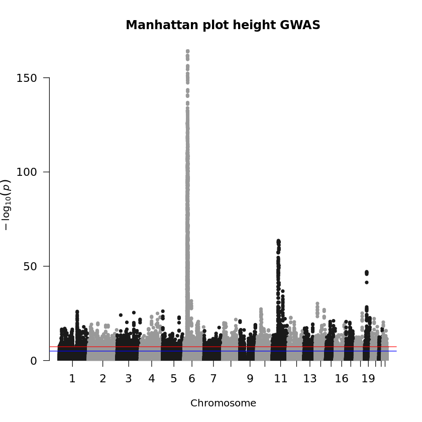
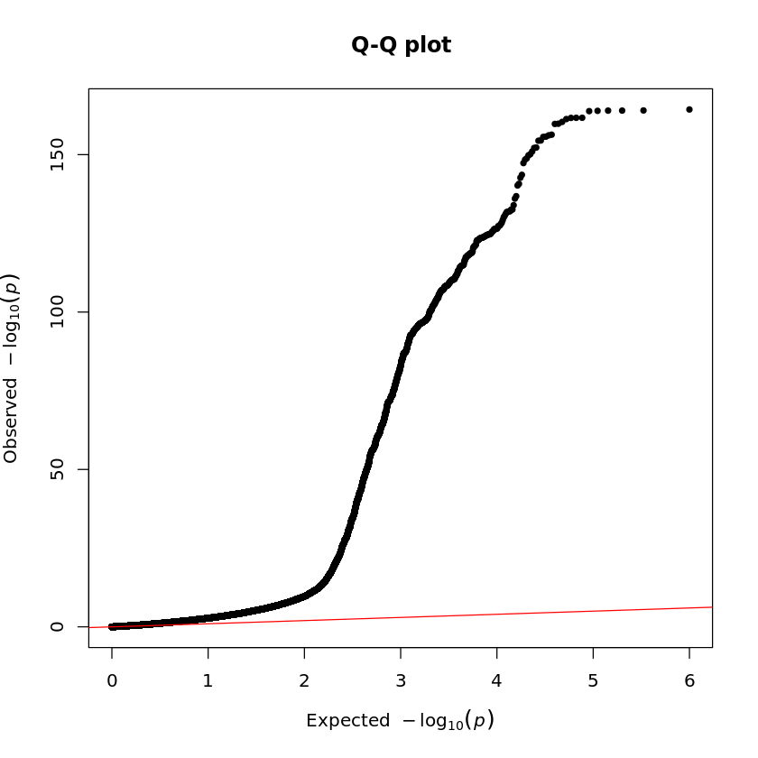
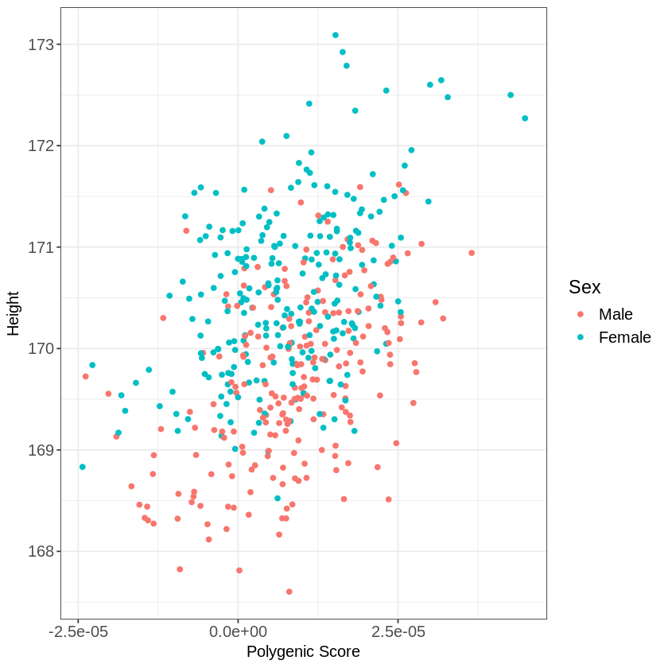

ln -sf ../../Data
ln -sf ../ResultsPRSice exercise
Explore the base GWAS and compute polygenic scores for height in Europeans using PRSice2.
 R kernel.
R kernel.
# Setup to avoid long messages and plot on screen
options(warn=-1)
options(jupyter.plot_mimetypes = 'image/png')
# Load GWAS package qqman
suppressMessages(library("qqman"))
# Manhattan plot using --logistic results
height_eur <- read.table("./Data/Height.QC.gz", head=TRUE)
manhattan(height_eur, main = "Manhattan plot height GWAS", cex.axis=1.1)
## QQ plot
qq(height_eur$P, main = "Q-Q plot")

Does the plot surprise you? You can notice extreme deviations in the QQ-plot and an overwhelming number of significant variants. To refine your analysis and avoid false positives, you should perform MAF and INFO filtering to exclude rare variants and poorly imputed or uncertain variants that could lead to false associations.
 Bash kernel.
Bash kernel.
You need to perform the PRS analysis on the simulated dataset in the following way:
PRSice --base ./Data/Height.QC.gz \
--target ./Data/EUR.QC \
--binary-target F \
--pheno ./Data/EUR.height \
--cov ./Data/EUR.covariate \
--base-maf MAF:0.01 \
--base-info INFO:0.8 \
--stat BETA \
--out Results/GWAS7/EUR.PRSiceTrying to install data.table in ./lib
Cannot install data.table, will fall back and use read.table instead
Note: It will be slower when reading large files
PRSice 2.3.3 (2020-08-05)
https://github.com/choishingwan/PRSice
(C) 2016-2020 Shing Wan (Sam) Choi and Paul F. O'Reilly
GNU General Public License v3
If you use PRSice in any published work, please cite:
Choi SW, O'Reilly PF.
PRSice-2: Polygenic Risk Score Software for Biobank-Scale Data.
GigaScience 8, no. 7 (July 1, 2019)
2025-02-13 11:17:33
./Software/PRSice \
--a1 A1 \
--a2 A2 \
--bar-levels 0.001,0.05,0.1,0.2,0.3,0.4,0.5,1 \
--base ./Data/Height.QC.gz \
--base-info INFO:0.8 \
--base-maf MAF:0.01 \
--beta \
--binary-target F \
--bp BP \
--chr CHR \
--clump-kb 250kb \
--clump-p 1.000000 \
--clump-r2 0.100000 \
--cov ./Data/EUR.covariate \
--interval 5e-05 \
--lower 5e-08 \
--num-auto 22 \
--out Results/GWAS7/EUR.PRSice \
--pheno ./Data/EUR.height \
--pvalue P \
--seed 3670089626 \
--snp SNP \
--stat BETA \
--target ./Data/EUR.QC \
--thread 1 \
--upper 0.5
Initializing Genotype file: ./Data/EUR.QC (bed)
Start processing Height.QC
==================================================
Base file: ./Data/Height.QC.gz
GZ file detected. Header of file is:
CHR BP SNP A1 A2 N SE P BETA INFO MAF
Reading 100.00%
499617 variant(s) observed in base file, with:
499617 total variant(s) included from base file
Loading Genotype info from target
==================================================
483 people (232 male(s), 251 female(s)) observed
483 founder(s) included
489805 variant(s) included
Phenotype file: ./Data/EUR.height
Column Name of Sample ID: FID+IID
Note: If the phenotype file does not contain a header, the
column name will be displayed as the Sample ID which is
expected.
There are a total of 1 phenotype to process
Start performing clumping
Clumping Progress: 29.98%IOPub message rate exceeded.
The Jupyter server will temporarily stop sending output
to the client in order to avoid crashing it.
To change this limit, set the config variable
`--ServerApp.iopub_msg_rate_limit`.
Current values:
ServerApp.iopub_msg_rate_limit=1000.0 (msgs/sec)
ServerApp.rate_limit_window=3.0 (secs)
Clumping Progress: 100.00%
Number of variant(s) after clumping : 193758
Processing the 1 th phenotype
Height is a continuous phenotype
11 sample(s) without phenotype
472 sample(s) with valid phenotype
Processing the covariate file: ./Data/EUR.covariate
==============================
Include Covariates:
Name Missing Number of levels
Sex 0 -
PC1 0 -
PC2 0 -
PC3 0 -
PC4 0 -
PC5 0 -
PC6 0 -
After reading the covariate file, 472 sample(s) included in
the analysis
Start Processing
Processing 27.49%IOPub message rate exceeded.
The Jupyter server will temporarily stop sending output
to the client in order to avoid crashing it.
To change this limit, set the config variable
`--ServerApp.iopub_msg_rate_limit`.
Current values:
ServerApp.iopub_msg_rate_limit=1000.0 (msgs/sec)
ServerApp.rate_limit_window=3.0 (secs)
Plotting the high resolution plot
By looking at the output file *.summary, we can conclude that:
- Best-fit P-value is ~0.4
- Phenotypic variation explained by the best-fi model is ~0.16
 R kernel.
R kernel.
Below is an example of how you could create a plot in R to visualize height PGS differences across sex:
library(ggplot2)
# Read in the files
prs <- read.table("./Results/GWAS7/EUR.PRSice.best", header=T)
height <- read.table("./Data/EUR.height", header=T)
sex <- read.table("./Data/EUR.cov", header=T)
# Rename the sex
sex$Sex <- as.factor(sex$Sex)
levels(sex$Sex) <- c("Male", "Female")
# Merge the files
dat <- merge(merge(prs, height), sex)
# Start plotting
ggplot(dat, aes(x=PRS, y=Height, color=Sex))+
geom_point()+
theme_bw()+
labs(x="Polygenic Score", y="Height") +
theme(axis.text=element_text(size=12), axis.title=element_text(size=12), legend.text=element_text(size=12),legend.title=element_text(size=14))
Copyright
CC-BY-SA 4.0 license